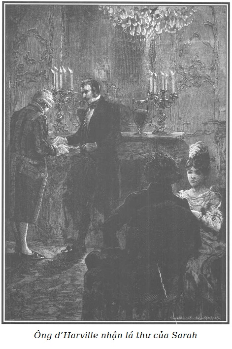

Vào cái ngày mà mụ Vọ và lão Thầy Đồ bắt cóc Marie, vào khoảng mười giờ tối, một người đi ngựa đến trại Bouqueval nói là thay mặt ông Rodolphe để báo cho bà Georges được an tâm về sự vắng mặt của cô gái trẻ mà bà bảo trợ, ngày một ngày hai cô sẽ được đưa trở về với bà. Vì nhiều lý do quan trọng, người ấy nói thêm, ông Rodolphe yêu cầu bà Georges, trong trường hợp bà cần yêu cầu ở ông điều gì, thì chớ có gửi thư lên tận Paris, mà chỉ phải đưa thư cho người đặc phái viên nhận đảm đương cho.
Phái viên mật ấy là người của Sarah.
Bằng mẹo lừa này, Sarah làm cho bà Georges yên lòng và như vậy thì lúc Rodolphe biết được tin Marie bị bắt cóc đã chậm mất mấy ngày.
Trong khoảng thời gian ấy, Sarah hy vọng sẽ bắt buộc được lão chưởng khế Jacques Ferrand giúp cho điều gian trá xấu xa (việc đánh tráo con mà chúng tôi đã nói đến). Chưa hết đâu.
Sarah còn muốn tống khứ cả d’Harville phu nhân. Người này làm cho d’Harville phu nhân phải lo lắng thực sự và đã có lần nàng suýt bị hại nếu không có Rodolphe nhanh trí cứu thoát.
Một ngày sau cái hôm mà Hầu tước theo dõi vợ mình trong cái nhà phố Temple, Tom đã đến đây, đã làm cho bà Pipelet bép xép chuyện một phu nhân trẻ suýt bị chồng bắt đã nhờ ông Rodolphe, một người thuê phòng gần đấy, khéo léo cứu thoát.
Biết được tình tiết này, nhưng không có chứng cứ cụ thể về những buổi hò hẹn mà Clémence đã hứa với Charles Robert, Sarah bèn nghĩ ra một mưu đồ ghê tởm: chỉ phải gửi tiếp theo một lá thư nặc danh nữa cho ông d’Harville để cắt đứt hoàn toàn quan hệ giữa Rodolphe và Hầu tước, hay ít nhất cũng để gieo vào đầu ông này những điều ngờ vực khá mạnh để ông ta cấm vợ từ nay không được tiếp cận Hoàng thân nữa.
Lá thư ấy diễn đạt như sau:
“Họ đã lừa ông một cách xấu xa đấy. Hôm trước, được báo là có ông theo sau, vợ ông đã tưởng tượng ra một duyên cớ làm việc thiện, cũng tưởng tượng nốt. Họ đi đến chỗ hò hẹn ở một phòng trên tầng bốn do một ngài rất tôn nghiêm thuê dưới cái tên Rodolphe. Nếu ông còn nghi ngờ về việc này, dù cho là kỳ cục thế nào đi nữa, xin mời đến nhà số 17 phố Temple hỏi thăm, miêu tả nét người của nhân vật tôn nghiêm được nói đến và ông sẽ dễ dàng nhận ra ông là người chồng cả tin và nhu nhược nhất trần đời, đã bị lừa dối đến bội thực. Chớ coi thường lời khuyến cáo này, bằng không thì thiên hạ có thể tin rằng ông cũng thực quá là… bạn thân của ông hoàng.”
Tờ thiếp được Sarah gửi bưu điện lúc năm giờ, cũng cùng ngày bà ta trao đổi với lão chưởng khế. Cũng cùng hôm ấy, sau khi đã căn dặn kĩ càng ông de Graün phải thúc giục để làm sao Cecily có thể đến Paris sớm nhất, ngay trong buổi tối hôm ấy, Rodolphe đi thăm bà đại sứ phu nhân rồi đến nhà d’Harville phu nhân báo tin ông đã tìm được một việc từ thiện nhiều tình tiết hấp dẫn xứng đáng với sự quan tâm của nàng.
Hầu tước và vợ vừa ăn tối xong. Nàng Clémence tỏ ra trìu mến, dịu dàng, ông d’Harville dường như kém buồn hơn mọi khi.
Phải nói vội rằng, Hầu tước chưa nhận được lá thư nặc danh bỉ ổi mà Sarah mới viết.
Ông bất giác hỏi vợ, hỏi để mà hỏi:
- Tối nay em định làm gì?
- Em không đi đâu cả. Thế còn anh, anh định làm gì?
- Chẳng biết nữa! - Ông chồng thở dài trả lời. - Không thể chịu đựng nổi thiên hạ. Anh sẽ qua buổi tối nay như bao nhiêu buổi tối khác… cô đơn.
- Tại sao lại cô đơn? Vì em có đi đâu đâu?
Ông d’Harville ngạc nhiên nhìn vợ:
- Hẳn là thế… nhưng…
- Sao kia ạ?
- Anh biết là em thường thích ngồi một mình hơn, nếu không đi giao thiệp bên ngoài.
- Đúng vậy, nhưng vì em có rất nhiều ý thích thất thường, - Clémence mỉm cười - cho nên hôm nay em rất muốn được chia sẻ nỗi cô đơn với anh nếu anh thấy như thế là dễ chịu.
- Thật sao? - Ông d’Harville xúc động reo lên. - Sao em dễ mến thế, em đi trước cả những ước muốn mà anh chưa hề dám ngỏ lời.
- Bạn của em ơi! Có biết là ngạc nhiên như thế gần như là trách móc đấy!
- Trách móc ư? Ôi, không đâu, không phải thế đâu. Nhưng sau những ngờ vực sai trái và độc ác của anh hôm trước, thấy em khoan dung như thế, anh thú thực, đấy quả là một điều bất ngờ đối với anh, nhưng mà là một điều bất ngờ êm dịu nhất.
- Hãy quên việc đã qua đi, anh ạ. - Nàng nói với chồng, mở một nụ cười dịu dàng rất mực.
- Clémence, có thể mãi mãi như thế được không? - Ông ta buồn rầu hỏi lại. - Chẳng phải anh đã nỡ dám ngờ vực em hay sao? Anh nói thực nhé, lòng ghen tuông mù quáng đã thúc đẩy anh đến những hành động cực đoan. Nhưng như thế thì đáng kể gì bên những lầm lỗi khác lớn hơn, khó vãn hồi hơn?
Clémence cố nén nỗi đau lòng, nói với giọng xúc động:
- Quên quá khứ đi anh ạ, em nói với anh thế đấy!
- Anh hiểu thế nào đây? Việc đã qua ấy cũng thế sao, em có thể quên được sao?
- Em mong như thế đấy!
- Như vậy thật à? Clémence, em độ lượng đến thế sao? Nhưng không, không đâu, anh đâu dám tin ở một điều hạnh phúc như vậy, anh cứ tưởng là đã từ bỏ nó mãi mãi rồi.
- Anh đã lầm đấy, anh thấy chứ?
- Thay đổi đến thế! Chúa ơi! Có phải là chiêm bao không? Chao ôi, hãy nói cho anh biết là anh đã không tự dối mình.
- Không, anh không tự dối mình đâu!
- Thế đấy! Cái nhìn của em đã kém lạnh lùng. Giọng của em gần như xúc động. Ôi, nói đi em! Có thật đúng là như vậy không? Anh có phải là nạn nhân của ảo ảnh không?
- Không đâu! Vì cả em nữa, em cũng cần được tha thứ.
- Em ấy à?
- Luôn luôn đấy! Chẳng phải là đối với anh, em đã từng tỏ ra nghiệt ngã, có thể coi là bất nhẫn cũng được. Tại sao em không nghĩ là anh đã phải tỏ ra có một nghị lực hiếm thấy, một đức độ khác đời để mà không làm khác đi những gì anh đã làm? Đơn côi, đau khổ, làm sao chống chọi được ước mong tìm thấy niềm an ủi nào đó trong cuộc hôn nhân đã làm anh hài lòng. Than ôi! Khi mà người ta đau khổ, người ta sẵn sàng tin vào lòng độ lượng của những người khác. Sai lầm của anh là ở chỗ anh tưởng đã trông mong được vào em. Vậy thì, từ nay trở đi em sẽ cố gắng nhận là anh đã có lý.
- Ôi, nói đi em! Nói nữa đi em! - Ông d’Harville chắp hai tay ngây ngất.
- Đời chúng ta mãi mãi gắn bó với nhau. Em sẽ dốc hết sức để làm cho cuộc sống của anh bớt phần cay đắng.
- Chúa ơi, Chúa ơi! Clémence, có phải anh đang nghe em nói đấy không?
- Em xin anh, đừng lấy đó làm lạ, anh ạ! Như thế làm em đau lòng. Đó là một sự phê phán cay đắng cho sự đối xử của em trước đây. Em đã có một ý nghĩ tốt đẹp. Em đã nghĩ, nghĩ nhiều về giai đoạn vừa qua, nghĩ nhiều đến sau này. Em đã nhận thấy mình lỗi lầm và em đã tìm thấy phương cách sửa chữa những lỗi lầm ấy. Em tin là thế!
- Lỗi lầm của em! Người vợ đáng thương của anh!
- Vâng, ngay sau lễ tân hôn, lẽ ra em phải trông cậy vào lòng trung thực của anh, và thành thực xin anh cho chúng ta bỏ nhau.
- Chao ôi! Clémence, thương lấy anh! Thương anh với!
- Trừ phi là, vì em đã cắn răng chịu đựng tình trạng ấy, em phải làm cho nó cao thượng hơn bởi sự tận tâm, thay vì trở nên đối với anh như một sự trách móc không ngừng bởi thái độ lạnh nhạt đáng sợ, chỉ còn nhớ đến nỗi bất hạnh của anh. Dần dà, lẽ ra em sẽ phải lưu tâm ái ngại cho anh hơn nữa, vì lẽ ngay cả những việc chăm chút, có thể cả những hy sinh làm em khổ tâm nhiều, em sẽ được đền bù lại bằng lòng biết ơn của anh và từ đó… Nhưng, Chúa ơi! Anh sao thế? Anh khóc!
- Đúng, anh khóc đấy, anh khóc vì vui sướng, em không biết là tất cả những lời em nói ra làm anh thêm xúc động nữa hay sao? Chao ôi! Clémence, cứ để cho anh khóc. Chẳng bao giờ hơn lúc này, anh mới hiểu ra là anh tội lỗi đến thế nào vì rằng đã ràng buộc em với cuộc đời đáng buồn của anh.
- Và em cũng thế, chưa bao giờ em tự thấy là đối với em, phải kiên quyết hơn trong ý định: Tha thứ. Những giọt nước mắt êm dịu anh nhỏ ra làm em biết mình có hạnh phúc mà không biết. Can đảm lên, bạn ơi! Can đảm lên! Không có được một cuộc sống tươi vui và hạnh phúc, chúng ta hãy tìm thỏa mãn trong sự hoàn thành những bổn phận nghiêm túc mà số phận đã áp đặt cho chúng ta. Chúng ta hãy khoan dung cho nhau, nếu chúng ta có lúc nào mềm yếu, chúng ta hãy nhìn cái nôi của con gái chúng ta, tập trung vào con tất cả tình trìu mến của chúng ta, thế là chúng ta sẽ lại có được một vài niềm vui lành mạnh mà u sầu nào đó.
- Một nữ thiên thần! Đúng là một nữ thiên thần! - Ông d’Harville reo to chắp hai tay mà ngắm nghía vợ mình, say mê và khâm phục. Chao ôi! Em có biết đâu nỗi sung sướng và khổ đau em đem lại cho anh, hỡi Clémence! Em có biết đâu là những lời nói nghiệt ngã trước kia của em, những lời trách móc chua xót nhất, than ôi, mà lại là xứng đáng nhất, chưa bao giờ đè nặng lên anh nhiều bằng sự khoan dung đáng mến, sự nhẫn nhục độ lượng của em. Ấy thế mà, dù anh không muốn, em lại làm cho hy vọng trở lại với anh. Em không biết cái tương lai mà anh dám thoáng thấy đâu!
- Và anh có thể dốc lòng tin tưởng hoàn toàn vào những gì em đã nói với anh. Cái ý định ấy, em sẽ kiên quyết giữ cho được, em sẽ không bao giờ làm trệch đi, em xin thề với anh như vậy. Ngay cả về sau này nữa, em sẽ có thêm nhiều bảo đảm để giữ lời hứa với anh.
- Những đảm bảo! - Ông d’Harville mỗi lúc một thêm hứng khởi vì một hạnh phúc ít ngờ đến. - Những đảm bảo! Anh đâu cần đến chúng? Cái nhìn của em, giọng nói của em, cái vẻ nhân từ tuyệt vời làm em đẹp hơn nữa, tiếng đập của trái tim anh, tất cả những cái đó há chẳng tỏ cho anh hay là em nói thật hay sao? Nhưng em biết đấy, con người ta không bao giờ biết chán trong những ước nguyện của mình. - Hầu tước nói thêm và nhích lại phía ghế vợ nhiều hơn. - Những lời nói cao quý và cảm động cho anh có gan dám liều để hy vọng. Hy vọng không ngờ, đúng thế, hy vọng cái điều mà mới hôm qua đây anh còn coi như một giấc mơ rồ dại.
- Hãy nói rõ ra, em van anh! - Clémence hơi hoảng sợ trước những lời nói si mê ấy của chồng nàng.
- Vậy thì, phải đấy! - Ông nắm lấy tay vợ mà nói. - Phải đấy, càng âu yếm, càng chăm chút, càng yêu thương, em có hiểu không? Clémence, anh hy vọng sẽ làm em yêu anh! Không phải là một sự trìu mến nhạt nhẽo, hững hờ, mà là trìu mến nồng nhiệt, như ở anh. Ôi, em không biết đến cái si mê ấy đâu! Có phải là anh chỉ dám nói với em đến thế? Em lúc nào cũng tỏ ra băng giá với anh. Chẳng bao giờ có được một lời thân thiện! Chẳng bao giờ có được một trong những câu nói ấy! Những câu mà lúc nãy đã làm anh phát khóc. Và lúc này thì làm anh say sưa vì hạnh phúc. Và niềm hạnh phúc ấy anh xứng đáng được hưởng. Anh mãi mãi yêu em nhiều! Và anh đã đau khổ biết mấy mà không thể nói để em hay. Nỗi buồn rầu giày vò anh là như thế đấy. Phải đấy, khiếp sợ giao tiếp, tính cách rầu rĩ, lầm lì là như thế đó. Em cũng hãy hình dung như vậy đi, có một người vợ đáng yêu và được yêu mến trong nhà mình, cũng là nhà của em; một người vợ mà người ta ham muốn, với tất cả sự hăng say của một mối tình gò bó và cứ mãi mãi bị vợ kết án chăn đơn gối chiếc, mất ngủ nấu nung… Ôi, không, em đâu biết đến những giọt nước mắt tuyệt vọng, những cơn giận điên người, rồ dại! Anh xin cam đoan là điều đó có thể sẽ làm em cảm động. Nhưng mà, anh nói gì nhỉ? Cái đó đã làm em cảm động. Em đã đoán ra những nỗi giày vò trong anh, có phải không? Em sẽ lấy làm thương hại nhìn thấy vẻ đẹp khó tả nên lời của em, vẻ duyên dáng làm say lòng người của em sẽ chẳng còn là hạnh phúc nữa cũng như nỗi thống khổ hằng ngày của anh. Phải đấy, cái kho tàng mà anh coi là quý giá nhất, cái kho tàng ấy thuộc về anh mà anh không chiếm hữu được, cái kho tàng ấy sắp là của anh. Đúng đấy, trái tim của anh, niềm vui của anh, nỗi si mê của anh, tất cả điều nói như thế, có phải không hở bạn, người bạn thắm thiết của anh!
Nói rồi, d’Harville đặt lên tay vợ nhiều cái hôn say đắm. Buồn vì sự hiểu lầm của chồng, nàng Clémence không tự kiềm chế được, trong cử chỉ ghê sợ lúc đầu, gần như là khiếp hãi, bỗng nhiên giật tay ra.
Nét mặt của nàng rõ ràng bộc lộ một nỗi đau xót mà ông d’Harville không thể hiểu sai.
Cú bất ngờ này đối với ông ta thật kinh khủng.
Nét mặt ông ta đượm vẻ đau lòng xé ruột. Nàng nhanh nhẹn vội đưa tay ra và lên tiếng ngay:
- Anh Albert, em xin thề, em xin nguyện sẽ là một trong những người bạn tận tâm nhất, người em gái dịu dàng nhất nhưng không thể hơn được nữa. Em xin lỗi, xin lỗi… nếu mà… dù em không muốn những lời mình nói gợi lên cho anh những hy vọng mà em không bao giờ thực hiện được.
- Không bao giờ sao? - d’Harville hướng về vợ mình một cái nhìn năn nỉ, tuyệt vọng.
- Chẳng bao giờ anh ạ! - Clémence đáp.
Chỉ mấy tiếng ấy thôi, giọng nói của người thiếu phụ bộc lộ một quyết định không bao giờ thay đổi.
Do ảnh hưởng của Rodolphe mà quay về với những quyết định cao quý, nàng Clémence đã có ý định kiên trì đối xử ân cần với d’Harville qua những chăm sóc cảm động nhất, nhưng nàng cảm thấy chẳng bao giờ có được khả năng tình ái với chàng.
Một ấn tượng còn nghiệt ngã hơn là hãi hùng, hơn cả khinh miệt, hơn cả căm ghét cách ly mãi mãi Clémence với chồng nàng.
Đấy là một cảm giác ghê tởm không cưỡng nổi.
Sau một lúc im lặng đau đớn, d’Harville đưa tay lên đôi mắt rớm lệ và cay đắng, ngao ngán nói với vợ mình:
- Xin lỗi em! Anh đã lầm tưởng. Xin lỗi em vì đã tự buông thả cho một hy vọng điên rồ.
Rồi sau một hồi im lặng, ông ta lớn tiếng than thở:
- Chao ôi! Sao mà tôi cực khổ thế này?
- Bạn ơi! - Nàng Clémence nói với chồng. - Em vốn không muốn trách móc anh làm gì, tuy nhiên dường như anh chẳng kể gì đến lời em hứa hẹn sẽ chỉ là một trong những người em gái dịu dàng nhất của anh sao? Anh cần nhớ đến tình bạn tận tụy, đến những chăm sóc ân cần hơn là trông chờ ở tình yêu. Anh cứ hy vọng. Hy vọng ở những ngày tốt đẹp hơn sau này, cho đến nay, anh thấy em tưởng như thờ ơ trước những nỗi buồn rầu của anh, rồi anh sẽ thấy em động lòng chia sẻ thế nào và sẽ an ủi anh như thế nào qua lòng trìu mến của em.
Một người hầu buồng đi vào và thưa với nàng Clémence:
- Đức ông Đại công tước xứ Gerolstein hỏi liệu phu nhân có thể tiếp ngài ấy được không ạ?
Clémence đưa mắt hỏi chồng.
Ông d’Harville bình tĩnh trở lại, nói với vợ:
- Chắc chắn là được chứ!
Người hầu buồng ra ngoài.
- Xin lỗi anh, - nàng Clémence nói tiếp - nhưng em có cấm cửa ai đâu. Vả lại cũng đã lâu anh chưa gặp lại Hoàng thân. Hẳn ngài ấy sẽ rất vui mừng thấy anh cũng ở đây.
- Anh cũng rất vui mừng được gặp ông hoàng, tuy nhiên, anh thú thật với em, lúc này đây, anh đang bối rối, cho nên anh nghĩ rằng tiếp đón Người vào một ngày khác thì tốt hơn.
- Em hiểu. Nhưng biết làm thế nào? Người đến đây rồi này!
Vừa lúc ấy có tiếng trình báo Hoàng thân Rodolphe đã tới.
- Tôi vui sướng đến nghìn lần, thưa phu nhân, được vinh dự gặp phu nhân, - Rodolphe nói - và tôi còn mừng gấp đôi nữa kia vì nhờ may mắn mà tôi có cả nỗi vui mừng được gặp ông, ông Albert thân mến của tôi ạ. - Ông nói và quay lại phía Hầu tước, bắt tay rất thân tình.
- Đã khá lâu rồi, thật vậy, thưa Điện hạ, tôi mới có vinh dự tỏ bày lòng tôn kính đối với Người.
- Và thế là tại ai nhỉ? Thưa với ông người-khó-gặp, lần cuối cùng tôi đến thăm phu nhân d’Harville mới đây, tôi cứ đòi gặp ông nhưng ông đi vắng. Thế là đã ba tuần trôi qua, ông quên tôi đấy nhé, tệ thật đấy!
- Xin Điện hạ cứ thẳng tay cho! - Clémence mỉm cười. - Ông d’Harville nhà tôi càng tỏ ra tận tụy bao nhiêu với Điện hạ, lại càng có lỗi bấy nhiêu và chính hờ hững như vậy lại càng dễ làm ngờ vực lòng tận tâm ấy!
- Vậy thì, phu nhân thấy không, tôi cũng nên lấy làm tự hào đấy chứ, dù cho ông d’Harville có làm gì đi nữa thì đối với tôi, chẳng bao giờ tôi ngờ vực lòng thân ái của ông ấy. Nhưng tôi lại không được phép nói như vậy. Tôi lại càng khuyến khích ông ấy làm ra vẻ thờ ơ nhiều hơn.
- Xin Điện hạ tin là chỉ một vài hoàn cảnh bất ngờ nào đó mới ngăn trở được tôi thường xuyên hưởng những ân huệ của Người.
- Anh Albert thân mến ơi, nói riêng giữa hai ta thôi, tôi tin là ông hơi quá thuần khiết trong tình bạn đấy. Biết chắc là người ta yêu quý ông, ông càng ít thiết tha hơn để bày tỏ và tiếp nhận những bằng chứng gắn bó kéo sơn đấy!

.Do một thiếu sót về nghi thức khiến d’Harville phu nhân cảm thấy hơn phật ý, một người hầu buồng đi vào đem một lá thư cho Hầu tước. Đó chính là lá thư nặc danh của Sarah tố giác ông hoàng là nhân ngãi của bà d’Harville.
Ông Hầu tước, do tôn kính Hoàng thân, đưa tay đẩy cái khay bạc mà người hầu đưa đến và nói khẽ:
- Lát nữa! Lát nữa!
- Ông Albert thân mến, - Rodolphe nói với giọng thân ái nhất - ông lại còn khách sáo như thế với tôi sao?
- Thưa Điện hạ!
- Với sự đồng ý của bà d’Harville, xin mời, đọc lá thư ấy đi.
- Tôi xin cam đoan với Điện hạ là không có gì phải vội cả.
- Tôi nói lần nữa đấy, ông Albert, hãy đọc thư đi!
- Nhưng thưa Điện hạ…
- Xin cứ tự nhiên, tôi muốn thế đấy!
Ông Hầu tước cầm lá thư trên khay:
- Vì Điện hạ đòi hỏi đấy!
- Tất nhiên tôi đòi hỏi, ông phải coi tôi như là bạn thân mới được.
Rồi quay lại với bà Hầu tước trong khi ông d’Harville phá niêm lá thư oan nghiệt, mà ông không thể tưởng tượng ra được nội dung, Rodolphe bảo:
- Chiến thắng mới lớn chứ, thưa phu nhân, bà luôn luôn buộc được cái ý chí ngoan cường đến thế phải nhượng bộ!
D’Harville đến gần một trong những giá cắm nến nơi lò sưởi và mở lá thư của Sarah.